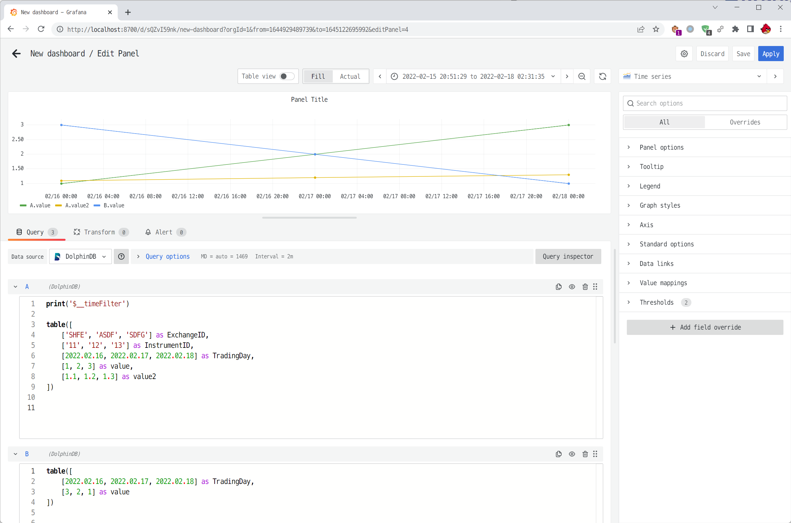

DolphinDB Grafana DataSource Plugin
DolphinDB 提供了使用前端连接数据库的 dolphindb-datasource 数据源插件。该插件使用 WebSocket 进行通信，支持用户在 Grafana 面板上实现 DolphinDB 时序数据的可视化。
注意：使用该插件需要浏览器和数据库处于同一网络下。
安装
1. 安装 Grafana
前往 Grafana 官网下载并安装最新的开源版本 (OSS, Open-Source Software)。
2. 安装 dolphindb-datasource 插件
在 Github-grafana_datasource-Releases 中下载最新版本的插件压缩包，如 dolphindb-datasource.v2.0.900.zip。
将压缩包中的 dolphindb-datasource 文件夹解压到以下路径:
Windows：\<grafana 安装目录>\data\plugins\
Linux：/var/lib/grafana/plugins/
注意：如果不存在 plugins 目录，可手动创建。
3. 修改 Grafana 配置文件，使其允许加载未签名的 dolphindb-datasource 插件
推荐用户阅读推荐用户阅读 Grafana 配置说明文档，然后打开并编辑配置文件。
在 [plugins] 部分下面取消注释 allow_loading_unsigned_plugins，并配置为 dolphindb-datasource
allow_loading_unsigned_plugins = dolphindb-datasource注：每次修改配置项后，需重启 Grafana。
4. 重启 Grafana 进程或服务
打开任务管理器 > 服务 > 找到 Grafana 服务 > 右键重启
推荐用户阅读 Grafana 快速上手文档。
方法 2: 使用包含 dolphindb-datasource 插件的 Grafana Docker 镜像
DolphinDB 将包含 dolphindb-datasource 插件的 Grafana 集成为一个 Docker 镜像，可以通过 Docker 容器快速部署，节省过于繁琐的配置步骤。具体安装步骤如下：
下载配置文件至某个路径
本文中使用的配置文件可从grafana.ini获得，而本文例子中该配置文件位于* /ddbdocker/grafana.ini*。
执行如下命令，从远程 Docker 仓库拉取镜像
docker pull dolphindb/dolphindb-grafana:9.1.0执行如下命令，创建一个名为 ddb_gra 的容器：
docker run -itd --name ddb_gra \ -p 3000:3000 -v /ddbdocker/grafana.ini:/etc/grafana/grafana.ini \ gra_ddb_ds:v1 sh参数解释：
- --name 表示所创建的容器名称。
- -p 表示将容器的端口映射到宿主机上，以实现通过宿主机端口访问容器内的服务，本文为 Grafana 服务。
- -v 表示将配置好的 grafana.ini 映射到容器内，并覆盖原有默认的 grafana.ini。如需使用容器内的默认配置，可不指定 -v 参数。
- gra_ddb_ds:v1 表示Docker 镜像的名称。必须填入完整的镜像名称。
预期输出（容器的完整 id）：
3cdfbab788d0054a80c450e67d5273fb155e30b26a6ec6ef8821b832522474f5
验证已加载插件
若成功安装，可在 Grafana 启动日志中可以看到类似如下内容：
WARN [05-19|12:05:48] Permitting unsigned plugin. This is not recommended logger=plugin.signature.validator pluginID=dolphindb-datasource pluginDir=<grafana 安装目录>/data/plugins/dolphindb-datasource日志文件路径：
- Windows：\<grafana 安装目录>\data\log\grafana.log
- Linux：/var/log/grafana/grafana.log
或者可访问链接：http://localhost:3000/plugins。若成功安装，可看到页面中 DolphinDB 插件是 Installed 状态。
使用方法
打开并登录 Grafana
打开 http://localhost:3000。初始登入名以及密码均为 admin。
新建 DolphinDB 数据源
打开 http://localhost:3000/datasources ，或点击左侧导航的 Configuration > Data sources 添加数据源，搜索并选择 “dolphindb”，配置数据源后点 Save & Test 以保存数据源。
注意: 2022 年及之后的插件使用 WebSocket 协议与 DolphinDB 数据库通信，因此数据源配置中的 URL 需要以 ws:// 或者 wss:// 开头
新建 Panel，通过编写查询脚本或订阅流数据表，可视化 DolphinDB 时序数据
打开或新建 Dashboard，编辑或新建 Panel，在 Panel 的 Data source 属性中选择上一步添加的数据源。
编写脚本执行查询，可视化返回的时序表格
- 将 query 类型设置为
脚本。 - 编写查询脚本，代码的最后一条语句需要返回 table。
- 编写完成后按
Ctrl + S保存，或者点击页面中的刷新按钮 (Refresh dashboard)，可以将 Query 发到 DolphinDB 数据库运行并展示出图表。 - 代码编辑框的高度通过拖动底部边框进行调整。
- 点击右上角的保存
Save按钮，保存 panel 配置。
dolphindb-datasource 插件支持变量，比如:
$__timeFilter变量: 值为面板上方的时间轴区间，比如当前的时间轴区间是2022-02-15 00:00:00 - 2022.02.17 00:00:00，那么代码中的$__timeFilter会被替换为pair(2022.02.15 00:00:00.000, 2022.02.17 00:00:00.000)。$__interval和$__interval_ms变量: 值为 Grafana 根据时间轴区间长度和屏幕像素点自动计算的时间分组间隔。$__interval会被替换为 DolphinDB 中对应的 DURATION 类型;$__interval_ms会被替换为毫秒数 (整型)。- query 变量: 通过 SQL 查询生成动态值或选项列表。
更多变量请查看 Grafana 变量说明。
要查看代码中 print('xxx') 输出的消息，或者变量替换 (插值) 后的代码，可以按 F12 或 Ctrl + Shift + I 或 右键 > 检查 打开浏览器的开发者调试工具 (devtools), 切换到控制台 (Console) 面板中查看。
订阅并实时可视化 DolphinDB 中的流数据表
要求：DolphinDB server 版本不低于 2.00.9 或 1.30.21。
- 将 query 类型设置为
流数据表。 - 填写要订阅的流数据表表名 。
- 点击暂存按钮。
- 将时间范围改成
Last 5 minutes(需要包含当前时间，如 Last x hour/minutes/seconds，而不是历史时间区间，否则看不到数据)。 - 点击右上角的保存
Save按钮，保存 panel 配置。
参考文档
FAQ
Q: 如何设置 Dashboard 自动刷新间隔？
A:
- 对于脚本类型，打开 Dashboard, 在右上角刷新按钮右侧点击下拉框选择自动刷新间隔。
- 对于流数据表类型，数据是实时的，无需设置。没有新的数据更新发生时，连接会关闭；如有新的数据更新发生，连接会重新建立。
如果需要自定义刷新间隔，可以打开 dashboard settings > Time options > Auto refresh, 输入自定义的间隔。
如果需要定义比 5s 更小的刷新间隔，比如 1s，需要按下面的方法操作：
修改 Grafana 配置文件：
[dashboards] min_refresh_interval = 1s修改完后重启 Grafana。
参考: 如何修改刷新率
构建及开发方法
git clone https://github.com/dolphindb/grafana-datasource.git
cd grafana-datasource
npm i --force
# 1. 构建插件
npm run build
# 完成后产物在 out 文件夹中。将 out 重命名为 dolphindb-datasource 后压缩为 .zip 即可
# 2. 开发插件
npm run dev
# 将 out 文件夹软链接到 Grafana plugins 目录下
flink('d:/grafana-datasource/out/', 'e:/sdk/grafana/data/plugins/dolphindb-datasource/')
# 重启 Grafana